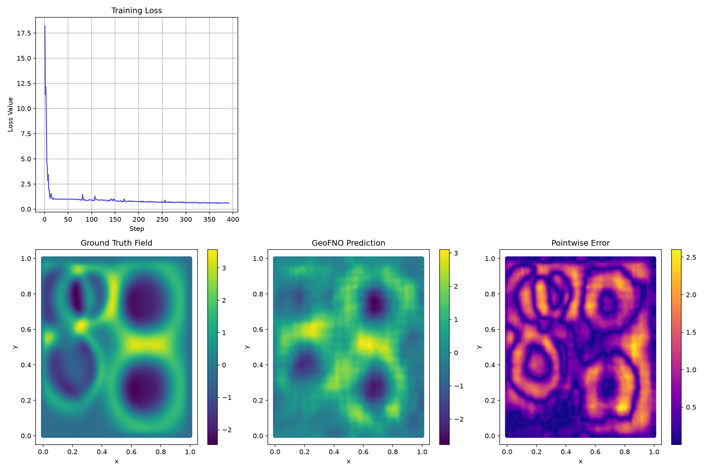

Advanced Training
Example 5: Advanced Training with Composed Loss and the Trainer Class¤
In this tutorial, we demonstrate how to set up an advanced training workflow in neojax using the built-in Trainer and TrainState orchestrators.
To this end, we train a GeoFNO on the PDEGym Wave-Layer (2D wave equation) dataset.
We will cover:
- Downloading the wave_layer dataset using the neojax downloader registry.
- Implementing a physics-informed PhysicsNormalizer (non-dimensionalization via CharacteristicLengthScale) and UnitGaussianNormalizer directly on physical coordinates and field values.
- Formulating a composed loss function featuring different weights for relative \(L^2\) error and Sobolev \(H^1\) gradient penalty.
- Executing a multi-epoch training loop, saving and reloading checkpoints, and plotting training statistics and predictions using matplotlib.
Some of the components used in this example are purely for the sake of demonstration (e.g. PhysicsNormalizer isn't needed as the data was already generated on the unit square).
To run this example, we first install and import the necessary python dependencies:
pip3 install "neojax-operators[ex,data]"
import tempfile
from collections.abc import Generator
from pathlib import Path
import equinox as eqx
import jax
import jax.numpy as jnp
import jax.random as jr
import matplotlib.pyplot as plt
import netCDF4 as nc
import numpy as np
import optax
from jaxtyping import Array, Float, PRNGKeyArray
from neojax.data import BundleProcessor
from neojax.data.bundles import DataBundle
from neojax.data.datasets import BundleDataset
from neojax.data.download import download_dataset
from neojax.data.normalizers import PhysicsNormalizer, UnitGaussianNormalizer
from neojax.data.scales import CharacteristicLengthScale
from neojax.data.schemas import (
ComposedSchema,
ConcatenateParamsSchema,
MeshInputSchema,
TimeToStationarySchema,
)
from neojax.metrics import ComposedMetric, RelativeLpMetric, SobolevMetric
from neojax.models import GeoFNO
from neojax.training import Trainer, TrainState
Mock NetCDF Fallback Generator¤
To ensure this tutorial notebook can execute in offline or sandboxed testing environments without making network queries, we provide a mock generator that mimics the PDEgym Wave-Layer dataset schema if the download fails.
Like other PDEGym datasets, wave_layer ships no explicit coordinate variable and no explicit channel axis (the field has a single physical channel). The solution variable's dimensions are (sample, time, x, y). We generate 21 time steps to match the real dataset, since the training pipeline below extracts two of them to form a stationary input/target pair.
With this mock dataset the results below can obviously not be reproduced.
def generate_mock_wave_layer_nc(file_path: Path) -> None:
"""Generates a mock NetCDF dataset mirroring PDEgym's Wave-Layer schema."""
with nc.Dataset(file_path, "w") as f:
f.createDimension("sample", 16)
f.createDimension("time", 21)
f.createDimension("x", 16)
f.createDimension("y", 16)
# Trajectories solution (sample=16, time=21, x=16, y=16); no explicit
# channel or coordinate variable, matching the real Wave-Layer files.
solution = np.random.randn(16, 21, 16, 16).astype(np.float32)
s_var = f.createVariable("solution", "f4", ("sample", "time", "x", "y"))
s_var[:] = solution
# Wave speed parameter field (sample=16, x=16, y=16); ships as a
# separate variable, matching the real Wave-Layer files.
c = np.random.rand(16, 16, 16).astype(np.float32)
c_var = f.createVariable("c", "f4", ("sample", "x", "y"))
c_var[:] = c
Download and Load wave_layer Dataset¤
We query the registry to locate wave_layer and download it directly to a local scratch directory, falling back to mock data if offline.
(To avoid high RAM usage, we remove two thirds of the dataset before loading it. Remove this if you have the RAM. This is a dodgy solution and download_dataset will expose an option to control dataset sizes in future versions.)
For any dataset that doesn't explicitly provide coordinates, as is the case for the Wave-Layer dataset, even spacing over the domain is assumed and the coordinates are created as such.
Creating DataBundle datasets requires passing a mapping from dataset variable names to the class fields of DataBundle. This mapping may specify concatenations of variables by passing a one-to-many mapping and the respective concat_axes. See the documentation for details.
WARNING: Loading the BundleDataset loads one third of the dataset into RAM (~5.5GB).
tmpdir = tempfile.TemporaryDirectory()
data_dir = Path(tmpdir.name)
try:
print("Attempting to download wave_layer dataset from Hugging Face registry...")
downloaded_files = download_dataset("wave_layer", target_dir=data_dir)
print(f"Successfully downloaded wave_layer dataset to: {data_dir}")
for f in data_dir.iterdir():
if f.is_file() and f.name in (f"solution_{i}.nc" for i in range(1, 3)):
f.unlink()
data_path = data_dir
except Exception as e:
print(f"Could not download dataset ({e}). Creating mock wave_layer NetCDF instead.")
data_path = data_dir / "wave_layer_solution.nc"
generate_mock_wave_layer_nc(data_path)
# Load NetCDF file into a DataBundle dataset.
# We map the propagation speed c to the "parameters" field and the solution to the "fields".
# Because "coords" is not provided, an evenly spaced grid over the unit square is generated
# automatically, and a singleton channel axis is inserted since 'solution' has none of its own.
dataset = BundleDataset.from_pdegym(
data_path, field_mapping={"fields": "solution", "parameters": "c"}
)
print(
f"Loaded dataset. Coords shape: {dataset.coords.shape}, Fields shape: {dataset.fields.shape}"
)
Output:
Attempting to download wave_layer dataset from Hugging Face registry...
c_0.nc: 100%|██████████| 690M/690M [00:09<00:00, 69.5MB/s]
solution_0.nc: 100%|██████████| 4.83G/4.83G [00:48<00:00, 98.7MB/s]
solution_1.nc: 100%|██████████| 4.83G/4.83G [00:47<00:00, 103MB/s]
solution_2.nc: 100%|██████████| 4.83G/4.83G [00:59<00:00, 81.7MB/s]
Successfully downloaded wave_layer dataset to: /tmp/tmposqbdhlv
Loaded dataset. Coords shape: (2, 128, 128), Fields shape: (3504, 21, 1, 128, 128)
/tmp/ipykernel_180/3009266032.py:22: UserWarning: No 'coords' entry in field_mapping; generating default coordinates as an evenly spaced grid over the unit hypercube [0, 1]^2 with spatial shape (128, 128). Pass an explicit 'coords' mapping to use the dataset's own physical domain.
dataset = BundleDataset.from_pdegym(
/usr/local/lib/python3.13/dist-packages/neojax/data/datasets/bundle_dataset.py:307: UserWarning: 'parameters' has 10512 samples but 'fields' has 3504; truncating 'parameters' to the first 3504 samples to match. This usually means the dataset was only partially downloaded (e.g. every parameter file but not every field file) -- download the dataset completely, or pass matching subsets, to avoid this.
mapped_data = enforce_consistent_batch_size(mapped_data)
Configure Normalizers and Build the Schema Pipeline¤
We scale coordinate dimensions using a PhysicsNormalizer to enforce non-dimensional scaling, then pipe the fields through a standard UnitGaussianNormalizer. Both are orchestrated by a single BundleProcessor.
Wave-Layer has \(t=21\) uniformly spaced time steps, but GeoFNO solves stationary problems (one input state, one target state). TimeToStationarySchema extracts two time indices from every time-dependent array in a DataBundle — here \(t=0\) as input and \(t=5\) as the target.
Both extracted slices arrive packed into a single DataBundle with a time axis of length 2. From here the pipeline has to diverge:
- The input slice gets the wave-speed field
cconcatenated onto its channel axis viaConcatenateParamsSchema(so the model is conditioned on the medium it's solving through). - The target slice stays unchanged.
Because ComposedSchema is strictly one bundle in, one bundle out, this branch point can't live inside it. split_stationary_bundle below is a plain function that performs the split, sitting between the shared prefix (TimeToStationarySchema) and the two independent downstream schemas.
Each branch finishes with MeshInputSchema, which reshapes a DataBundle into the {"u": ..., "x_in": ...} mesh format GeoFNO expects. It flattens the (now singleton) time axis into channels and the spatial grid into a list of nodes, in one step.
All of these schemas are agnostic to whether they're called on a single sample, a mini-batch, or the whole dataset, so the entire pipeline runs once per training batch via prepare_stationary_batch, rather than being precomputed for the full (multi-GB) dataset up front.
physics_norm = PhysicsNormalizer(CharacteristicLengthScale(L_ref=0.1))
unit_norm = UnitGaussianNormalizer()
processor = BundleProcessor(normalizers={"fields": unit_norm, "coords": physics_norm})
# Schema pipeline: shared prefix, then two diverging per-branch schemas
stationary_schema = TimeToStationarySchema(time_axis=1, time_slice_indices=(0, 5))
input_schema = ComposedSchema(
[ConcatenateParamsSchema(channel_axis=2), MeshInputSchema(time_axis=1, channel_axis=2)]
)
target_schema = MeshInputSchema(time_axis=1, channel_axis=2)
def split_stationary_bundle(
bundle: DataBundle, time_axis: int = 1
) -> tuple[DataBundle, DataBundle]:
"""Splits a two-time-slice DataBundle into independent (input, target) bundles."""
def select(idx: int) -> DataBundle:
idx_arr = jnp.array([idx])
return DataBundle(
coords=bundle.coords,
fields=jnp.take(bundle.fields, idx_arr, axis=time_axis),
parameters=bundle.parameters,
bc_masks=bundle.bc_masks,
bc_values=(
jnp.take(bundle.bc_values, idx_arr, axis=time_axis)
if bundle.bc_values is not None
else None
),
edge_indices=bundle.edge_indices,
)
return select(0), select(1)
def get_batch(dataset: BundleDataset, idx: Array) -> DataBundle:
"""Fetches a batch, keeping coords shared rather than duplicated per sample."""
batch = dataset[idx]
return eqx.tree_at(lambda b: b.coords, batch, dataset.coords)
def prepare_stationary_batch(
processor: BundleProcessor, dataset: BundleDataset, idx: Array
) -> tuple[dict, Array]:
"""Normalizes a batch and runs it through the schema pipeline to model-ready (x, y)."""
batch = get_batch(dataset, idx)
stationary = processor.transform(batch, stationary_schema)
x_bundle, y_bundle = split_stationary_bundle(stationary)
x = input_schema.transform(x_bundle) # {"u": (B, C+1, N), "x_in": (N, d)}
y = target_schema.transform(y_bundle) # {"u": (B, C, N), "x_in": (N, d)}
return x, y["u"]
# Split into train/validation trajectories (90/10)
num_train = int(dataset.fields.shape[0] * 0.9)
train_dataset = BundleDataset(
coords=dataset.coords,
fields=dataset.fields[:num_train],
parameters=dataset.parameters[:num_train] if dataset.parameters is not None else None,
)
test_dataset = BundleDataset(
coords=dataset.coords,
fields=dataset.fields[num_train:],
parameters=dataset.parameters[num_train:] if dataset.parameters is not None else None,
)
# Fit normalizer statistics on the training split only
processor = processor.compute_stats(
DataBundle(
coords=dataset.coords,
fields=train_dataset.fields,
parameters=train_dataset.parameters,
)
)
print(f"Train samples: {len(train_dataset)}, Test samples: {len(test_dataset)}")
Output:
Train samples: 3153, Test samples: 351
Define Loss Metrics¤
We create a composed loss combining relative \(L^2\) error (with weight 0.9) and Sobolev \(H^1\) penalty (with weight 0.1). We bind the flattened spatial grid coordinates statically in our functional loss to avoid copying the coordinates across batches.
We use the stochastic first order version of the Sobolev metric, which requires us to pass a random key to the loss function.
Note, that we wouldn't have to pass method="stochastic" in this case, because the input/output grids are large. The "auto" method also defaults to the "stochastic" mode here. We also choose to sample only 2 basis vectors. This makes the Sobolev gradient noisy, but it reduces computational cost.
rel_l2_metric = RelativeLpMetric(p=2.0)
sobolev_metric = SobolevMetric(p=2.0, k=1, method="stochastic", n_random_samples=2)
composed_loss_metric = ComposedMetric(
rel_l2_metric, sobolev_metric, composition_fn=lambda rel_l2, sobolev: 0.9 * rel_l2 + 0.1 * sobolev
)
def loss_fn(model: GeoFNO, batch: tuple[dict[str, Array], Array, PRNGKeyArray], training: bool) -> tuple[Float[Array, ""], dict[str, Float[Array, ""]]]:
x, y, sobolev_key = batch
# Wrapper binding the (shared, un-batched) mesh coordinates statically
model_fn = lambda u: model(u, x_in=x["x_in"])
# Forward pass on all batch samples
preds = jax.vmap(model_fn)(x["u"])
# Composed metric computes derivatives w.r.t input x using model_fn
# We pass return_components to get the individual loss components as well
loss, (relative_l2_val, sobolev_val) = composed_loss_metric(
model=model_fn, x=x["u"], target=y, pred=preds, key=sobolev_key, return_components=True
)
return loss, {"relative_l2": relative_l2_val, "sobolev": sobolev_val}
Instantiate GeoFNO and Trainer¤
We configure the needed hyperparameters, instantiate the model and configure the optimizer and Trainer class.
key = jr.key(0)
model_key, train_key = jr.split(key)
batch_size = 32
n_epochs = 200
total_steps = n_epochs * (len(train_dataset) // batch_size)
model_hyperparams = {
"in_channels": 2, # wave field + concatenated wave-speed parameter channel
"out_channels": 1,
"hidden_channels": 32,
"n_layers": 3,
"modes": (24, 24),
"grid_resolution": (128, 128),
}
model = GeoFNO(
key=model_key,
**model_hyperparams,
)
schedule = optax.warmup_cosine_decay_schedule(
init_value=0.0,
peak_value=1e-3,
warmup_steps=int(0.05 * total_steps),
decay_steps=total_steps,
end_value=1e-5,
)
optimizer = optax.adam(learning_rate=schedule)
trainer = Trainer(optimizer=optimizer, loss_fn=loss_fn)
Execute Training Loop & Checkpoint State¤
We run the loop for 200 epochs over shuffled mini-batches, logging loss values and weight trajectories, then verify checkpointing. Each mini-batch is turned into model-ready inputs via prepare_stationary_batch, applying the schema pipeline defined above.
We quickly check if the model compiles...
# We check if the model compiles before starting an `expensive` training run
from pprint import pprint
dummy_key = jr.key(1)
dummy_input = jr.normal(dummy_key, (2, 128, 128))
success, comp_summary = model.profile_compile(dummy_input)
print("Compiled: ", success)
pprint(comp_summary)
Compiled: True
{'compiled_cost_analysis': {'bytes accessed': 58327580.0,
'bytes accessed0{}': 24326148.0,
'bytes accessed1{}': 24289664.0,
'bytes accessed2{}': 2490466.0,
'bytes accessed3{}': 104.0,
'bytes accessed4{}': 40.0,
'bytes accessed5{}': 1048576.0,
'bytes accessed6{}': 1048576.0,
'bytes accessedout{0}': 24576.0,
'bytes accessedout{1}': 24576.0,
'bytes accessedout{}': 24096808.0,
'flops': 371843072.0,
'optimal_seconds': -6.0,
'transcendentals': 1441793.0,
'utilization0{}': 71.0,
'utilization1{}': 43.0,
'utilization2{}': 17.0,
'utilization3{}': 11.0,
'utilization4{}': 10.0,
'utilization5{}': 1.0,
'utilization6{}': 1.0},
'exception': None,
'lowering': '',
'lowering_cost_analysis': None}
Now onto model training...
We use the already jitted eval_step and train_step of the Trainer class and pass the individual metrics as auxiliary information through both methods.
The rest is a pretty standard JAX training loop.
Warning: The computational graph is fairly complex (reverse-over-forward AD and GeoFNO latent-to-grid diffeomorphism). Training this model for 200 epochs took ~20 hours on a RTX A6000. It likely takes even longer on the standard Colab T4.
state = trainer.create_train_state(model, metadata={"epoch": 0})
losses = []
global_steps = 0
print_progress_freq = 50
eval_step_freq = 50
best_loss = float("inf")
def sample_batches(key: PRNGKeyArray, num_samples: int, batch_size: int, drop_last: bool = True) -> Generator[Array]:
"""Yields shuffled index batches covering the dataset once."""
perm = jr.permutation(key, num_samples)
if drop_last:
n_batches = num_samples // batch_size
num_samples = n_batches * batch_size
for start in range(0, num_samples, batch_size):
yield perm[start : start + batch_size]
def run_eval(state: TrainState, test_dataset: BundleDataset, epoch: int, global_step: int) -> float:
"""Runs one epoch over the test dataset."""
eval_key = jr.key(42)
batch_key, chain_key = jr.split(eval_key)
n_batches = 0
total_test_loss = jnp.asarray(0.0, dtype=jnp.float32)
total_h1_loss = jnp.asarray(0.0, dtype=jnp.float32)
total_rel_l2_loss = jnp.asarray(0.0, dtype=jnp.float32)
for idx in sample_batches(batch_key, len(test_dataset), batch_size):
skey, chain_key = jr.split(chain_key, 2)
x, y = prepare_stationary_batch(processor, test_dataset, idx)
eval_loss, aux = trainer.eval_step(state, (x, y, skey))
total_test_loss += eval_loss
total_h1_loss += aux["sobolev"]
total_rel_l2_loss += aux["relative_l2"]
n_batches += 1
avg_test_loss = float(total_test_loss / n_batches)
avg_h1_loss = float(total_h1_loss / n_batches)
avg_rel_l2_loss = float(total_rel_l2_loss / n_batches)
print(
f"[EVAL] - Epoch {epoch + 1:02d} | Step {global_step} | "
f"Avg Test Loss: {avg_test_loss:.4f} | "
f"Avg Test Rel L2 Loss: {avg_rel_l2_loss:.4f} | "
f"Avg Test H1 Loss: {avg_h1_loss:.4f}"
)
return avg_test_loss
print(f"Running training for {n_epochs} epochs...")
for epoch in range(n_epochs):
lkey, sobolev_key, key = jr.split(key, 3)
for idx in sample_batches(lkey, len(train_dataset), batch_size):
x, y = prepare_stationary_batch(processor, train_dataset, idx)
# Ensure to update the random key in each iteration
curr_sobolev_key, sobolev_key = jr.split(sobolev_key)
state, loss_val, aux = trainer.train_step(state, (x, y, curr_sobolev_key))
if global_steps % print_progress_freq == 0 and global_steps > 0:
l2_loss = float(aux["relative_l2"])
h1_loss = float(aux["sobolev"])
loss = float(loss_val)
losses.append(loss)
print(
f"[TRAIN] - Epoch {epoch + 1:02d} | Step {global_steps} | "
f"Training Loss: {loss:.4f} | "
f"Rel L2 Loss: {l2_loss:.4f} | H1 Loss: {h1_loss:.4f}"
)
if global_steps % eval_step_freq == 0 and global_steps > 0:
avg_test_loss = run_eval(state, test_dataset, epoch, global_steps)
if avg_test_loss < best_loss:
checkpoint_pth = data_dir / "train_state_best.bin"
state.save(checkpoint_pth, model_hyperparams)
print("Saved best model checkpoint to disk.")
global_steps += 1
# Checkpoint combined training state
checkpoint_file = data_dir / "train_state_final.bin"
state.save(checkpoint_file, model_hyperparams)
print("Saved final checkpoint to disk.")
Output:
Running training for 200 epochs...
[TRAIN] - Epoch 01 | Step 50 | Loss: 18.1956 | Rel L2 Loss: 18.2244 | H1 Loss: 17.9363
[EVAL] - Epoch 01 | Step 50 | Avg Test Loss: 17.6758 | Avg Test Rel L2 Loss: 17.6788 | Avg Test H1 Loss: 17.6493
Saved best model checkpoint to disk.
[TRAIN] - Epoch 02 | Step 100 | Loss: 11.3597 | Rel L2 Loss: 11.3912 | H1 Loss: 11.0770
[EVAL] - Epoch 02 | Step 100 | Avg Test Loss: 10.6736 | Avg Test Rel L2 Loss: 10.6776 | Avg Test H1 Loss: 10.6370
Saved best model checkpoint to disk.
[TRAIN] - Epoch 02 | Step 150 | Loss: 12.1643 | Rel L2 Loss: 12.1998 | H1 Loss: 11.8451
[EVAL] - Epoch 02 | Step 150 | Avg Test Loss: 11.3615 | Avg Test Rel L2 Loss: 11.3626 | Avg Test H1 Loss: 11.3517
...
[TRAIN] - Epoch 198 | Step 19400 | Loss: 0.5992 | Rel L2 Loss: 0.5952 | H1 Loss: 0.6350
[EVAL] - Epoch 198 | Step 19400 | Avg Test Loss: 0.6241 | Avg Test Rel L2 Loss: 0.6223 | Avg Test H1 Loss: 0.6401
[TRAIN] - Epoch 199 | Step 19450 | Loss: 0.6066 | Rel L2 Loss: 0.6055 | H1 Loss: 0.6167
[EVAL] - Epoch 199 | Step 19450 | Avg Test Loss: 0.6243 | Avg Test Rel L2 Loss: 0.6225 | Avg Test H1 Loss: 0.6410
[TRAIN] - Epoch 199 | Step 19500 | Loss: 0.6286 | Rel L2 Loss: 0.6296 | H1 Loss: 0.6193
[EVAL] - Epoch 199 | Step 19500 | Avg Test Loss: 0.6249 | Avg Test Rel L2 Loss: 0.6231 | Avg Test H1 Loss: 0.6413
[TRAIN] - Epoch 200 | Step 19550 | Loss: 0.5977 | Rel L2 Loss: 0.5955 | H1 Loss: 0.6179
[EVAL] - Epoch 200 | Step 19550 | Avg Test Loss: 0.6241 | Avg Test Rel L2 Loss: 0.6222 | Avg Test H1 Loss: 0.6405
Saved final checkpoint to disk.
Saved plot to <data_dir>/training_summary.png
Plot Training Progress and Qualitative Predictions¤
We plot the training loss curve and visualize model predictions on the (flattened) spatial grid.
The model could clearly be improved further (increasing the number of modes for example) but it appears to have started to learn the underlying operator.
# Evaluate model on first test sample
test_x, test_y = prepare_stationary_batch(processor, test_dataset, jnp.array([0]))
model_fn = lambda u: state.model(u, x_in=test_x["x_in"])
test_pred = model_fn(test_x["u"][0])
test_target = test_y[0]
test_error = jnp.abs(test_target - test_pred)
# Set up matplotlib figure
fig, axes = plt.subplots(2, 3, figsize=(15, 10))
# Plot Training Loss
axes[0, 0].plot(range(1, len(losses) + 1), losses, color="#4F46E5")
axes[0, 0].set_title("Training Loss")
axes[0, 0].set_xlabel("Step")
axes[0, 0].set_ylabel("Loss Value")
axes[0, 0].grid(True)
axes[0, 0].set_yscale("log")
# Disable unused plots
axes[0, 1].axis("off")
axes[0, 2].axis("off")
# Scatter plot of the mesh node coordinates, colored by field values
x_coords = test_x["x_in"][:, 0]
y_coords = test_x["x_in"][:, 1]
# Ground Truth
sc_gt = axes[1, 0].scatter(x_coords, y_coords, c=test_target[0], cmap="viridis", s=30)
axes[1, 0].set_title("Ground Truth Field")
axes[1, 0].set_xlabel("x")
axes[1, 0].set_ylabel("y")
fig.colorbar(sc_gt, ax=axes[1, 0])
# Prediction
sc_pred = axes[1, 1].scatter(x_coords, y_coords, c=test_pred[0], cmap="viridis", s=30)
axes[1, 1].set_title("GeoFNO Prediction")
axes[1, 1].set_xlabel("x")
axes[1, 1].set_ylabel("y")
fig.colorbar(sc_pred, ax=axes[1, 1])
# Absolute Error
sc_err = axes[1, 2].scatter(x_coords, y_coords, c=test_error[0], cmap="plasma", s=30)
axes[1, 2].set_title("Pointwise Error")
axes[1, 2].set_xlabel("x")
axes[1, 2].set_ylabel("y")
fig.colorbar(sc_err, ax=axes[1, 2])
plt.tight_layout()
fig.savefig(data_dir / "training_summary.png", dpi=150)
print(f"Saved plot to {data_dir}/training_summary.png")
plt.show()
